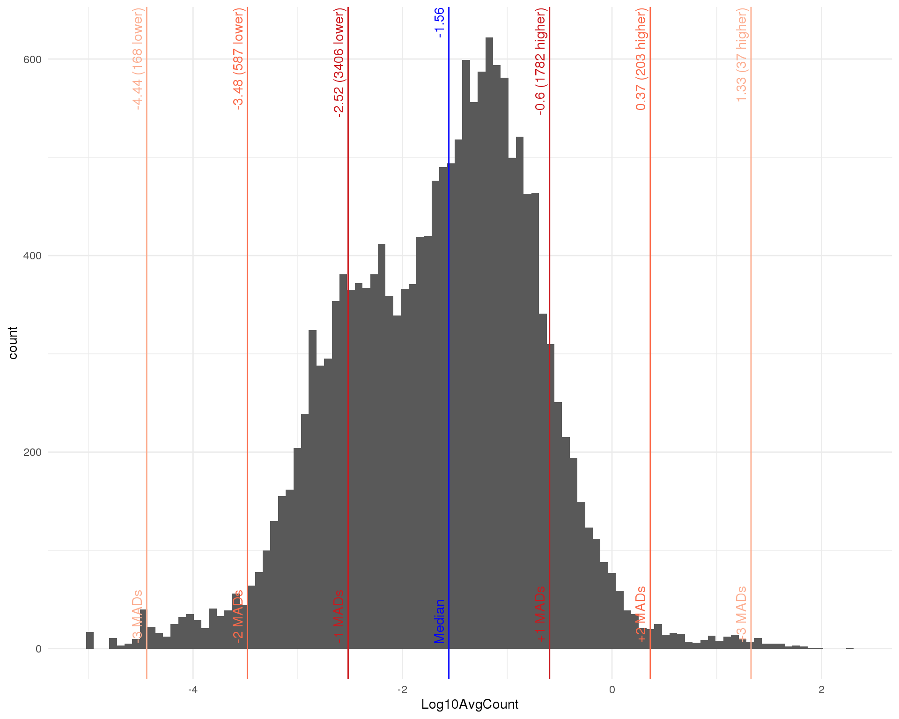
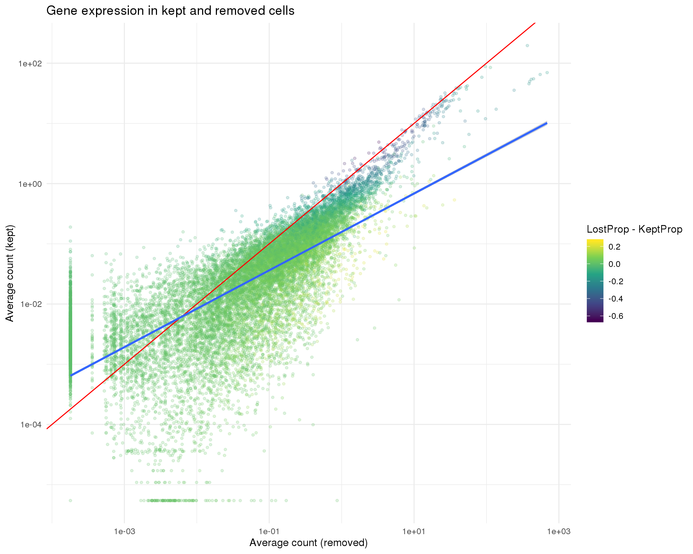

Quality control
2019-06-26
Last updated: 2019-06-26
Checks: 7 0
Knit directory: OzSingleCells2019/
This reproducible R Markdown analysis was created with workflowr (version 1.4.0). The Checks tab describes the reproducibility checks that were applied when the results were created. The Past versions tab lists the development history.
Great! Since the R Markdown file has been committed to the Git repository, you know the exact version of the code that produced these results.
Great job! The global environment was empty. Objects defined in the global environment can affect the analysis in your R Markdown file in unknown ways. For reproduciblity it’s best to always run the code in an empty environment.
The command set.seed(20190619) was run prior to running the code in the R Markdown file. Setting a seed ensures that any results that rely on randomness, e.g. subsampling or permutations, are reproducible.
Great job! Recording the operating system, R version, and package versions is critical for reproducibility.
Nice! There were no cached chunks for this analysis, so you can be confident that you successfully produced the results during this run.
Great job! Using relative paths to the files within your workflowr project makes it easier to run your code on other machines.
Great! You are using Git for version control. Tracking code development and connecting the code version to the results is critical for reproducibility. The version displayed above was the version of the Git repository at the time these results were generated.
Note that you need to be careful to ensure that all relevant files for the analysis have been committed to Git prior to generating the results (you can use wflow_publish or wflow_git_commit). workflowr only checks the R Markdown file, but you know if there are other scripts or data files that it depends on. Below is the status of the Git repository when the results were generated:
Ignored files:
Ignored: .DS_Store
Ignored: .Rhistory
Ignored: .Rproj.user/
Ignored: ._.DS_Store
Ignored: analysis/cache/
Ignored: data/._antibody_genes.tsv
Ignored: data/._antibody_genes.txt
Ignored: docs/.DS_Store
Ignored: docs/._.DS_Store
Ignored: output/03-comparison.Rmd/
Ignored: packrat/lib-R/
Ignored: packrat/lib-ext/
Ignored: packrat/lib/
Ignored: packrat/src/
Untracked files:
Untracked: analysis/05-cite-clustering.Rmd
Unstaged changes:
Modified: R/set_paths.R
Modified: data/02-CITE-filtered.Rds
Modified: data/02-filtered.Rds
Modified: output/02-quality-control.Rmd/parameters.json
Note that any generated files, e.g. HTML, png, CSS, etc., are not included in this status report because it is ok for generated content to have uncommitted changes.
These are the previous versions of the R Markdown and HTML files. If you’ve configured a remote Git repository (see ?wflow_git_remote), click on the hyperlinks in the table below to view them.
| File | Version | Author | Date | Message |
|---|---|---|---|---|
| Rmd | 8627b5b | Luke Zappia | 2019-06-26 | Remove all zero CITE cells |
| html | c602800 | Luke Zappia | 2019-06-20 | Add quality control |
#### LIBRARIES ####
# Package conflicts
library("conflicted")
# Single-cell
library("SingleCellExperiment")
library("scater")
# RNA-seq
library("edgeR")
# File paths
library("fs")
library("here")
# Presentation
library("knitr")
library("jsonlite")
library("cowplot")
# Tidyverse
library("tidyverse")
### CONFLICT PREFERENCES ####
conflict_prefer("path", "fs")
conflict_prefer("mutate", "dplyr")
conflict_prefer("arrange", "dplyr")
### SOURCE FUNCTIONS ####
source(here("R/output.R"))
source(here("R/plotting.R"))
### OUTPUT DIRECTORY ####
OUT_DIR <- here("output", DOCNAME)
dir_create(OUT_DIR)
#### SET GGPLOT THEME ####
theme_set(theme_minimal())
#### SET PATHS ####
source(here("R/set_paths.R"))Introduction
In this document we are going to load perform quality control of the RNA-seq dataset.
if (all(file_exists(c(PATHS$sce_sel, PATHS$cite_sel)))) {
sce <- read_rds(PATHS$sce_sel)
cite <- read_rds(PATHS$cite_sel)
} else {
stop("Selected dataset is missing. ",
"Please run '01-pre-processing.Rmd' first.",
call. = FALSE)
}
set.seed(1)
sizeFactors(sce) <- librarySizeFactors(sce)
sce <- normalize(sce)
sce <- runPCA(sce)
sce <- runTSNE(sce)
#sce <- runUMAP(sce)
col_data <- as.data.frame(colData(sce))
row_data <- as.data.frame(rowData(sce))Exploration
We will start off by making some plots to explore the dataset.
Expression by cell
Distributions by cell. Blue line shows the median and red lines show median absolute deviations (MADs) from the median.
Total counts
outlier_histogram(col_data, "log10_total_counts", mads = 1:6)
| Version | Author | Date |
|---|---|---|
| c602800 | Luke Zappia | 2019-06-20 |
Total features
outlier_histogram(col_data, "log10_total_features_by_counts", mads = 1:6)
| Version | Author | Date |
|---|---|---|
| c602800 | Luke Zappia | 2019-06-20 |
Percent mitochondrial
outlier_histogram(col_data, "pct_counts_MT", mads = c(1, 3, 5, 7))
| Version | Author | Date |
|---|---|---|
| c602800 | Luke Zappia | 2019-06-20 |
Dimensionality reduction
Dimensionality reduction plots coloured by technical factors can help identify which may be playing a bit role in the dataset.
dimred_factors <- c(
"Total counts" = "log10_total_counts",
"CellCycle" = "CellCycle",
"Total features" = "log10_total_features_by_counts",
"Mitochondrial genes" = "pct_counts_MT"
)PCA
plot_list <- lapply(names(dimred_factors), function(fct_name) {
plotPCA(sce, colour_by = dimred_factors[fct_name]) +
ggtitle(fct_name) +
theme(legend.position = "bottom")
})
plot_grid(plotlist = plot_list, ncol = 2)
| Version | Author | Date |
|---|---|---|
| c602800 | Luke Zappia | 2019-06-20 |
t-SNE
plot_list <- lapply(names(dimred_factors), function(fct_name) {
plotTSNE(sce, colour_by = dimred_factors[fct_name]) +
ggtitle(fct_name) +
theme(legend.position = "bottom")
})
plot_grid(plotlist = plot_list, ncol = 2)
| Version | Author | Date |
|---|---|---|
| c602800 | Luke Zappia | 2019-06-20 |
Explanatory variables
This plot shows the percentage of variance in the dataset that is explained by various technical factors.
exp_vars <- c("CellCycle", "log10_total_counts",
"pct_counts_in_top_100_features", "total_features_by_counts",
"pct_counts_MT")
all_zero <- Matrix::rowSums(counts(sce)) == 0
plotExplanatoryVariables(sce[!all_zero, ], variables = exp_vars)
| Version | Author | Date |
|---|---|---|
| c602800 | Luke Zappia | 2019-06-20 |
Cell cycle
The dataset has already been scored for cell cycle activity. This plot shows the G2/M score against the G1 score for each cell and let’s us see the balance of cell cycle phases in the dataset.
ggplot(col_data, aes(x = G1Score, y = G2MScore, colour = CellCycle)) +
geom_point() +
xlab("G1 score") +
ylab("G2/M score") +
theme_minimal()
| Version | Author | Date |
|---|---|---|
| c602800 | Luke Zappia | 2019-06-20 |
kable(table(Phase = col_data$CellCycle, useNA = "ifany"))| Phase | Freq |
|---|---|
| G1 | 2120 |
| G2M | 104 |
| S | 174 |
| NA | 1 |
Expression by gene
Distributions by cell. Blue line shows the median and red lines show median absolute deviations (MADs) from the median. We show distributions for all genes and those that have at least one count.
Mean
outlier_histogram(row_data, "log10_mean_counts", mads = c(10, 20))
| Version | Author | Date |
|---|---|---|
| c602800 | Luke Zappia | 2019-06-20 |
Total
outlier_histogram(row_data, "log10_total_counts", mads = 1:5)
| Version | Author | Date |
|---|---|---|
| c602800 | Luke Zappia | 2019-06-20 |
Mean (expressed)
outlier_histogram(row_data[row_data$total_counts > 0, ],
"log10_mean_counts", mads = c(10, 20))
| Version | Author | Date |
|---|---|---|
| c602800 | Luke Zappia | 2019-06-20 |
Total (expressed)
outlier_histogram(row_data[row_data$total_counts > 0, ],
"log10_total_counts", mads = 1:5)
| Version | Author | Date |
|---|---|---|
| c602800 | Luke Zappia | 2019-06-20 |
High expression genes
We can also look at the expression levels of just the top 50 most expressed genes.
plotHighestExprs(sce)
| Version | Author | Date |
|---|---|---|
| c602800 | Luke Zappia | 2019-06-20 |
Expression frequency
The relationshop between the number of cells that express a gene and the overall expression level can also be interesting. We expect to see that higher expressed genes are expressed in more cells but there will also be some that stand out from this.
Frequency by mean
plotExprsFreqVsMean(sce, controls = NULL)
| Version | Author | Date |
|---|---|---|
| c602800 | Luke Zappia | 2019-06-20 |
Zeros by total counts
ggplot(row_data,
aes(x = log10_total_counts, y = 1 - n_cells_by_counts / nrow(sce),
colour = gene_biotype)) +
geom_point(alpha = 0.2, size = 1) +
scale_y_continuous(labels = scales::percent) +
ggtitle("Percentage zeros by expression") +
xlab("log(total counts)") +
ylab("Percentage zeros")
| Version | Author | Date |
|---|---|---|
| c602800 | Luke Zappia | 2019-06-20 |
Cell filtering
We will now perform filtering to select high quality cells. Before we start we have 2399 cells.
The simplest filtering method is to set thresholds on some of the factors we have explored. Specifically these are the total number of counts per cell, the number of features expressed in each cell and the percentage of counts assigned to genes on the mitochondrial chromosome which is used as a proxy for cell damage. The selected thresholds and numbers of filtered cells using this method are:
counts_mads <- 4
features_mads <- 4
mt_mads <- 3
counts_out <- isOutlier(col_data$log10_total_counts,
nmads = counts_mads, type = "lower")
features_out <- isOutlier(col_data$log10_total_features_by_counts,
nmads = features_mads, type = "lower")
mt_out <- isOutlier(col_data$pct_counts_MT,
nmads = mt_mads, type = "higher")
cite_zero <- colSums(counts(cite)) == 0
counts_thresh <- attr(counts_out, "thresholds")["lower"]
features_thresh <- attr(features_out, "thresholds")["lower"]
mt_thresh <- attr(mt_out, "thresholds")["higher"]
kept <- !(counts_out | features_out | mt_out | cite_zero)
col_data$Kept <- kept
kable(tibble(
Type = c(
"Total counts",
"Total features",
"Mitochondrial %",
"CITE counts",
"Kept cells"
),
Threshold = c(
paste("< 10 ^", round(counts_thresh, 2),
paste0("(", round(10 ^ counts_thresh), ")")),
paste("< 10 ^", round(features_thresh, 2),
paste0("(", round(10 ^ features_thresh), ")")),
paste(">", round(mt_thresh, 2), "%"),
"> 0",
""
),
Count = c(
sum(counts_out),
sum(features_out),
sum(mt_out),
sum(cite_zero),
sum(kept)
)
))| Type | Threshold | Count |
|---|---|---|
| Total counts | < 10 ^ 2.91 (811) | 78 |
| Total features | < 10 ^ 2.61 (411) | 112 |
| Mitochondrial % | > 18.77 % | 154 |
| CITE counts | > 0 | 17 |
| Kept cells | 2171 |
colData(sce) <- DataFrame(col_data)
sce_qc <- sce[, kept]
col_data <- col_data[kept, ]We also remove cells that have no counts in the CITE data. Our filtered dataset now has 2171 cells.
Gene filtering
We also want to perform som filtering of features to remove lowly expressed genes that increase the computation required and may not meet the assumptions of some methods. Let’s look as some distributions now that we have removed low-quality cells.
Distributions
Average counts
avg_counts <- calcAverage(sce_qc, use_size_factors = FALSE)
row_data$AvgCount <- avg_counts
row_data$Log10AvgCount <- log10(avg_counts)
outlier_histogram(row_data, "Log10AvgCount", mads = 1:3, bins = 100)
| Version | Author | Date |
|---|---|---|
| c602800 | Luke Zappia | 2019-06-20 |
Number of cells
outlier_histogram(row_data, "n_cells_by_counts", mads = 1:3, bins = 100) +
scale_x_log10()
| Version | Author | Date |
|---|---|---|
| c602800 | Luke Zappia | 2019-06-20 |
Filter
min_count <- 1
min_cells <- 2
keep <- Matrix::rowSums(counts(sce_qc) >= min_count) >= min_cells
rowData(sce_qc) <- DataFrame(row_data)
sce_qc <- sce_qc[keep, ]
row_data <- row_data[keep, ]
set.seed(1)
sizeFactors(sce_qc) <- librarySizeFactors(sce_qc)
sce_qc <- normalize(sce_qc)
sce_qc <- runPCA(sce_qc)
sce_qc <- runTSNE(sce_qc)
#sce_qc <- runUMAP(sce_qc)We use a minimal filter that keeps genes with at least 1 counts in at least 2 cells. After filtering we have reduced the number of features from 17222 to 16859.
Validation
The final quality control step is to inspect some validation plots that should help us see if we need to make any adjustments.
Kept vs lost
One thing we can look at is the difference in expression between the kept and removed cells. If we see known genes that are highly expressed in the removed cells that can indicate that we have removed an interesting population of cells from the dataset. The red line shows equal expression and the blue line is a linear fit.
pass_qc <- colnames(sce) %in% colnames(sce_qc)
lost_counts <- counts(sce)[, !pass_qc]
kept_counts <- counts(sce)[, pass_qc]
kept_lost <- tibble(
Gene = rownames(sce),
Lost = calcAverage(lost_counts),
LostProp = Matrix::rowSums(lost_counts > 0) / ncol(lost_counts),
Kept = calcAverage(kept_counts),
KeptProp = Matrix::rowSums(kept_counts > 0) / ncol(kept_counts)
) %>%
mutate(LogFC = predFC(cbind(Lost, Kept),
design = cbind(1, c(1, 0)))[, 2]) %>%
mutate(LostCapped = pmax(Lost, min(Lost[Lost > 0]) * 0.5),
KeptCapped = pmax(Kept, min(Kept[Kept > 0]) * 0.5))
ggplot(kept_lost,
aes(x = LostCapped, y = KeptCapped, colour = LostProp - KeptProp)) +
geom_point(size = 1, alpha = 0.2) +
geom_abline(intercept = 0, slope = 1, colour = "red") +
geom_smooth(method = "lm") +
scale_x_log10() +
scale_y_log10() +
scale_colour_viridis_c() +
ggtitle("Gene expression in kept and removed cells") +
xlab("Average count (removed)") +
ylab("Average count (kept)") +
theme_minimal()
| Version | Author | Date |
|---|---|---|
| c602800 | Luke Zappia | 2019-06-20 |
kept_lost %>%
select(Gene, LogFC, Lost, LostProp, Kept, KeptProp) %>%
arrange(-LogFC) %>%
as.data.frame() %>%
head(100)Dimensionality reduction
Dimsionality reduction plots coloured by technical factors again gives us a good overview of the dataset.
PCA
plot_list <- lapply(names(dimred_factors), function(fct_name) {
plotPCA(sce_qc, colour_by = dimred_factors[fct_name]) +
ggtitle(fct_name) +
theme(legend.position = "bottom")
})
plot_grid(plotlist = plot_list, ncol = 2)
| Version | Author | Date |
|---|---|---|
| c602800 | Luke Zappia | 2019-06-20 |
t-SNE
plot_list <- lapply(names(dimred_factors), function(fct_name) {
plotTSNE(sce_qc, colour_by = dimred_factors[fct_name]) +
ggtitle(fct_name) +
theme(legend.position = "bottom")
})
plot_grid(plotlist = plot_list, ncol = 2)
| Version | Author | Date |
|---|---|---|
| c602800 | Luke Zappia | 2019-06-20 |
Filter CITE
We want to select the same set of cells in the CITE data.
cite_qc <- cite[, colnames(sce_qc)]Summary
After quality control we have a dataset with 2171 cells and 16859 genes.
Parameters
This table describes parameters used and set in this document.
params <- list(
list(
Parameter = "counts_thresh",
Value = counts_thresh,
Description = "Minimum threshold for (log10) total counts"
),
list(
Parameter = "features_thresh",
Value = features_thresh,
Description = "Minimum threshold for (log10) total features"
),
list(
Parameter = "mt_thresh",
Value = mt_thresh,
Description = "Maximum threshold for percentage counts mitochondrial"
),
list(
Parameter = "counts_mads",
Value = counts_mads,
Description = "MADs for (log10) total counts threshold"
),
list(
Parameter = "features_mads",
Value = features_mads,
Description = "MADs for (log10) total features threshold"
),
list(
Parameter = "mt_mads",
Value = mt_mads,
Description = "MADs for percentage counts mitochondrial threshold"
),
list(
Parameter = "min_count",
Value = min_count,
Description = "Minimum count per cell for gene filtering"
),
list(
Parameter = "min_cells",
Value = min_cells,
Description = "Minimum cells with min_count counts for gene filtering"
),
list(
Parameter = "n_cells",
Value = ncol(sce_qc),
Description = "Number of cells in the filtered dataset"
),
list(
Parameter = "n_genes",
Value = nrow(sce_qc),
Description = "Number of genes in the filtered dataset"
),
list(
Parameter = "median_genes",
Value = median(Matrix::colSums(counts(sce_qc) != 0)),
Description = paste("Median number of expressed genes per cell in the",
"filtered dataset")
),
list(
Parameter = "median_counts",
Value = median(Matrix::colSums(counts(sce_qc))),
Description = paste("Median number of counts per cell in the filtered",
"dataset")
)
)
params <- toJSON(params, pretty = TRUE)
kable(fromJSON(params))| Parameter | Value | Description |
|---|---|---|
| counts_thresh | 2.909 | Minimum threshold for (log10) total counts |
| features_thresh | 2.6136 | Minimum threshold for (log10) total features |
| mt_thresh | 18.7663 | Maximum threshold for percentage counts mitochondrial |
| counts_mads | 4 | MADs for (log10) total counts threshold |
| features_mads | 4 | MADs for (log10) total features threshold |
| mt_mads | 3 | MADs for percentage counts mitochondrial threshold |
| min_count | 1 | Minimum count per cell for gene filtering |
| min_cells | 2 | Minimum cells with min_count counts for gene filtering |
| n_cells | 2171 | Number of cells in the filtered dataset |
| n_genes | 16859 | Number of genes in the filtered dataset |
| median_genes | 1066 | Median number of expressed genes per cell in the filtered dataset |
| median_counts | 3226 | Median number of counts per cell in the filtered dataset |
Output files
This table describes the output files produced by this document. Right click and Save Link As… to download the results.
write_rds(sce_qc, PATHS$sce_qc, compress = "bz", compression = 9)
write_rds(cite_qc, PATHS$cite_qc, compress = "bz", compression = 9)
write_lines(params, path(OUT_DIR, "parameters.json"))
kable(data.frame(
File = c(
download_link("parameters.json", OUT_DIR)
),
Description = c(
"Parameters set and used in this analysis"
)
))| File | Description |
|---|---|
| parameters.json | Parameters set and used in this analysis |
Session information
sessioninfo::session_info()─ Session info ──────────────────────────────────────────────────────────
setting value
version R version 3.6.0 (2019-04-26)
os CentOS release 6.7 (Final)
system x86_64, linux-gnu
ui X11
language (EN)
collate en_US.UTF-8
ctype en_US.UTF-8
tz Australia/Melbourne
date 2019-06-26
─ Packages ──────────────────────────────────────────────────────────────
! package * version date lib source
assertthat 0.2.1 2019-03-21 [1] CRAN (R 3.6.0)
backports 1.1.4 2019-04-10 [1] CRAN (R 3.6.0)
beeswarm 0.2.3 2016-04-25 [1] CRAN (R 3.6.0)
Biobase * 2.44.0 2019-05-02 [1] Bioconductor
BiocGenerics * 0.30.0 2019-05-02 [1] Bioconductor
BiocNeighbors 1.2.0 2019-05-02 [1] Bioconductor
BiocParallel * 1.18.0 2019-05-03 [1] Bioconductor
BiocSingular 1.0.0 2019-05-02 [1] Bioconductor
bitops 1.0-6 2013-08-17 [1] CRAN (R 3.6.0)
broom 0.5.2 2019-04-07 [1] CRAN (R 3.6.0)
cellranger 1.1.0 2016-07-27 [1] CRAN (R 3.6.0)
cli 1.1.0 2019-03-19 [1] CRAN (R 3.6.0)
colorspace 1.4-1 2019-03-18 [1] CRAN (R 3.6.0)
conflicted * 1.0.3 2019-05-01 [1] CRAN (R 3.6.0)
cowplot * 0.9.4 2019-01-08 [1] CRAN (R 3.6.0)
crayon 1.3.4 2017-09-16 [1] CRAN (R 3.6.0)
DelayedArray * 0.10.0 2019-05-02 [1] Bioconductor
DelayedMatrixStats 1.6.0 2019-05-02 [1] Bioconductor
digest 0.6.19 2019-05-20 [1] CRAN (R 3.6.0)
dplyr * 0.8.1 2019-05-14 [1] CRAN (R 3.6.0)
edgeR * 3.26.4 2019-05-27 [1] Bioconductor
evaluate 0.14 2019-05-28 [1] CRAN (R 3.6.0)
forcats * 0.4.0 2019-02-17 [1] CRAN (R 3.6.0)
fs * 1.3.1 2019-05-06 [1] CRAN (R 3.6.0)
generics 0.0.2 2018-11-29 [1] CRAN (R 3.6.0)
GenomeInfoDb * 1.20.0 2019-05-02 [1] Bioconductor
GenomeInfoDbData 1.2.1 2019-06-19 [1] Bioconductor
GenomicRanges * 1.36.0 2019-05-02 [1] Bioconductor
ggbeeswarm 0.6.0 2017-08-07 [1] CRAN (R 3.6.0)
ggplot2 * 3.2.0 2019-06-16 [1] CRAN (R 3.6.0)
git2r 0.25.2 2019-03-19 [1] CRAN (R 3.6.0)
glue 1.3.1 2019-03-12 [1] CRAN (R 3.6.0)
gridExtra 2.3 2017-09-09 [1] CRAN (R 3.6.0)
gtable 0.3.0 2019-03-25 [1] CRAN (R 3.6.0)
haven 2.1.0 2019-02-19 [1] CRAN (R 3.6.0)
here * 0.1 2017-05-28 [1] CRAN (R 3.6.0)
highr 0.8 2019-03-20 [1] CRAN (R 3.6.0)
hms 0.4.2 2018-03-10 [1] CRAN (R 3.6.0)
htmltools 0.3.6 2017-04-28 [1] CRAN (R 3.6.0)
httr 1.4.0 2018-12-11 [1] CRAN (R 3.6.0)
IRanges * 2.18.1 2019-05-31 [1] Bioconductor
irlba 2.3.3 2019-02-05 [1] CRAN (R 3.6.0)
jsonlite * 1.6 2018-12-07 [1] CRAN (R 3.6.0)
knitr * 1.23 2019-05-18 [1] CRAN (R 3.6.0)
labeling 0.3 2014-08-23 [1] CRAN (R 3.6.0)
P lattice 0.20-38 2018-11-04 [5] CRAN (R 3.6.0)
lazyeval 0.2.2 2019-03-15 [1] CRAN (R 3.6.0)
limma * 3.40.2 2019-05-17 [1] Bioconductor
locfit 1.5-9.1 2013-04-20 [1] CRAN (R 3.6.0)
lubridate 1.7.4 2018-04-11 [1] CRAN (R 3.6.0)
magrittr 1.5 2014-11-22 [1] CRAN (R 3.6.0)
P Matrix 1.2-17 2019-03-22 [5] CRAN (R 3.6.0)
matrixStats * 0.54.0 2018-07-23 [1] CRAN (R 3.6.0)
memoise 1.1.0 2017-04-21 [1] CRAN (R 3.6.0)
P mgcv 1.8-28 2019-03-21 [5] CRAN (R 3.6.0)
modelr 0.1.4 2019-02-18 [1] CRAN (R 3.6.0)
munsell 0.5.0 2018-06-12 [1] CRAN (R 3.6.0)
P nlme 3.1-139 2019-04-09 [5] CRAN (R 3.6.0)
pillar 1.4.1 2019-05-28 [1] CRAN (R 3.6.0)
pkgconfig 2.0.2 2018-08-16 [1] CRAN (R 3.6.0)
purrr * 0.3.2 2019-03-15 [1] CRAN (R 3.6.0)
R6 2.4.0 2019-02-14 [1] CRAN (R 3.6.0)
RColorBrewer 1.1-2 2014-12-07 [1] CRAN (R 3.6.0)
Rcpp 1.0.1 2019-03-17 [1] CRAN (R 3.6.0)
RCurl 1.95-4.12 2019-03-04 [1] CRAN (R 3.6.0)
readr * 1.3.1 2018-12-21 [1] CRAN (R 3.6.0)
readxl 1.3.1 2019-03-13 [1] CRAN (R 3.6.0)
rlang 0.3.4 2019-04-07 [1] CRAN (R 3.6.0)
rmarkdown 1.13 2019-05-22 [1] CRAN (R 3.6.0)
rprojroot 1.3-2 2018-01-03 [1] CRAN (R 3.6.0)
rstudioapi 0.10 2019-03-19 [1] CRAN (R 3.6.0)
rsvd 1.0.1 2019-06-02 [1] CRAN (R 3.6.0)
Rtsne 0.15 2018-11-10 [1] CRAN (R 3.6.0)
rvest 0.3.4 2019-05-15 [1] CRAN (R 3.6.0)
S4Vectors * 0.22.0 2019-05-02 [1] Bioconductor
scales 1.0.0 2018-08-09 [1] CRAN (R 3.6.0)
scater * 1.12.2 2019-05-24 [1] Bioconductor
sessioninfo 1.1.1 2018-11-05 [1] CRAN (R 3.6.0)
SingleCellExperiment * 1.6.0 2019-05-02 [1] Bioconductor
stringi 1.4.3 2019-03-12 [1] CRAN (R 3.6.0)
stringr * 1.4.0 2019-02-10 [1] CRAN (R 3.6.0)
SummarizedExperiment * 1.14.0 2019-05-02 [1] Bioconductor
tibble * 2.1.3 2019-06-06 [1] CRAN (R 3.6.0)
tidyr * 0.8.3 2019-03-01 [1] CRAN (R 3.6.0)
tidyselect 0.2.5 2018-10-11 [1] CRAN (R 3.6.0)
tidyverse * 1.2.1 2017-11-14 [1] CRAN (R 3.6.0)
vipor 0.4.5 2017-03-22 [1] CRAN (R 3.6.0)
viridis 0.5.1 2018-03-29 [1] CRAN (R 3.6.0)
viridisLite 0.3.0 2018-02-01 [1] CRAN (R 3.6.0)
whisker 0.3-2 2013-04-28 [1] CRAN (R 3.6.0)
withr 2.1.2 2018-03-15 [1] CRAN (R 3.6.0)
workflowr 1.4.0 2019-06-08 [1] CRAN (R 3.6.0)
xfun 0.7 2019-05-14 [1] CRAN (R 3.6.0)
xml2 1.2.0 2018-01-24 [1] CRAN (R 3.6.0)
XVector 0.24.0 2019-05-02 [1] Bioconductor
yaml 2.2.0 2018-07-25 [1] CRAN (R 3.6.0)
zlibbioc 1.30.0 2019-05-02 [1] Bioconductor
[1] /group/bioi1/luke/analysis/OzSingleCells2019/packrat/lib/x86_64-pc-linux-gnu/3.6.0
[2] /group/bioi1/luke/analysis/OzSingleCells2019/packrat/lib-ext/x86_64-pc-linux-gnu/3.6.0
[3] /group/bioi1/luke/analysis/OzSingleCells2019/packrat/lib-R/x86_64-pc-linux-gnu/3.6.0
[4] /home/luke.zappia/R/x86_64-pc-linux-gnu-library/3.6
[5] /usr/local/installed/R/3.6.0/lib64/R/library
P ── Loaded and on-disk path mismatch.